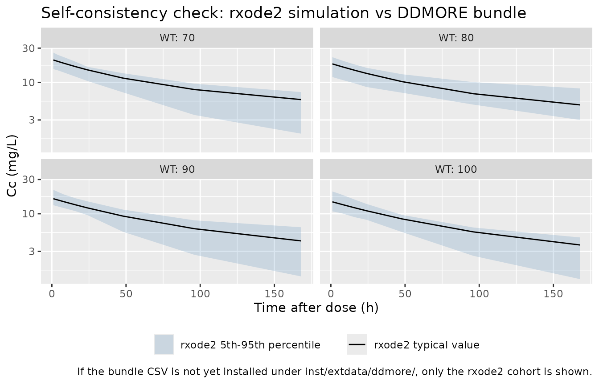

Sibrotuzumab (Kloft 2004)
Source:vignettes/articles/Kloft_2004_sibrotuzumab.Rmd
Kloft_2004_sibrotuzumab.RmdModel and source
- Citation: Kloft C, Graefe E-U, Tanswell P, Scott AM, Hofheinz R, Amelsberg A, Karlsson MO. (2004). Population pharmacokinetics of sibrotuzumab, a novel therapeutic monoclonal antibody, in cancer patients. Invest New Drugs 22(1):39-52. doi:10.1023/B:DRUG.0000006173.72210.1c. DDMORE Foundation Model Repository: DDMODEL00000195.
- Description: Two-compartment population PK model for sibrotuzumab in adults with metastatic FAP-positive cancer (Kloft 2004), with parallel linear and Michaelis-Menten elimination from the central compartment and a fixed linear body-weight covariate (centered at 75 kg) on linear CL, central and peripheral volumes, and Vmax.
- Article: https://doi.org/10.1023/B:DRUG.0000006173.72210.1c
- DDMORE Foundation Model Repository entry: DDMODEL00000195
This model was extracted from the DDMORE Foundation Model Repository
bundle for DDMODEL00000195 (scraped to
dpastoor/ddmore_scraping/195/). The bundle contains:
-
Executable_sibrotuzumab.mdl— the human-readable MDL control object (PARAMETERS, MODEL_PREDICTION, OBSERVATION blocks). -
Executable_sibrotuzumab.xml— PharmML-rendered version of the same -
Output_simulated_nca_simulation.1.lst— NMTRAN simulation listing produced by thepharmML2Nmtranv0.3.0 converter from the MDL (a 20-replicate$SIMULATION ... ONLYSIMULATIONover a single 80 mg / 1-hour IV infusion per subject; not an estimation run). -
Simulated_sibrotuzumab.csv— the corresponding simulated dataset (ID, TIME, WT, AMT, RATE, DV, MDV) with 20 subjects and WT in {70, 80, 90, 100} kg. -
Model_Accommodations.txt,DDMODEL00000195.rdf— provenance and scenario notes.
The .mdl PARAMETERS block carries the
publication-derived point values used to drive the simulation; there is
no Output_real_*.lst estimation listing in the bundle, so
the values cannot be cross-checked against a re-fitted set of final
estimates. The original Kloft 2004 publication is not on disk in this
worktree, so a side-by-side publication-table comparison is also out of
scope here.
Population
Kloft 2004 reports a population PK analysis of intravenous
sibrotuzumab (BIBH 1, a humanized IgG1 monoclonal antibody against
fibroblast activation protein, FAP) from a Phase I dose-escalation study
in adults with metastatic FAP-positive solid tumors. The DDMORE bundle
does not reproduce the published demographic table, so
the model’s population metadata fields for
n_subjects, n_studies,
weight_range, age_range, and
sex_female_pct are intentionally NA — readers
should consult the publication directly for those details.
The bundle ships a 20-subject smoke-test cohort
(Simulated_sibrotuzumab.csv) with body weights uniformly
drawn from {70, 80, 90, 100} kg and a single 80 mg / 1-hour IV infusion
per subject sampled at 1, 4, 8, 16, 24, 48, 96, and 168 hours post-dose.
That cohort is a regression-test artifact, not a representative
clinical-trial replication. The validation in this vignette uses an
analogous virtual cohort.
Source trace
Per-parameter origin (also recorded as in-file comments next to each
ini() entry of
inst/modeldb/ddmore/Kloft_2004_sibrotuzumab.R):
| Equation / parameter | Value | Source location |
|---|---|---|
lcl |
log(0.0221) |
Executable_sibrotuzumab.mdl PARAMETERS / STRUCTURAL
POP_CLL (mirrored as $THETA(1) 0.0221 in
Output_simulated_*.lst line 72) |
lvc |
log(4.13) |
.mdl PARAMETERS POP_V1
|
lvp |
log(3.19) |
.mdl PARAMETERS POP_V2
|
lq |
log(0.0376) |
.mdl PARAMETERS POP_Q
|
lvmax |
log(0.0338) |
.mdl PARAMETERS POP_Vmax
|
lkm |
log(8.0) |
.mdl PARAMETERS POP_Km
|
e_wt_cl |
fixed(0.0182) |
.mdl PARAMETERS BETA_CLL_WT
(fix = true) |
e_wt_vc |
fixed(0.0125) |
.mdl PARAMETERS BETA_V1_WT
(fix = true) |
e_wt_vp |
fixed(0.0105) |
.mdl PARAMETERS BETA_V2_WT
(fix = true) |
e_wt_vmax |
fixed(0.00934) |
.mdl PARAMETERS BETA_Vmax_WT
(fix = true) |
etalcl |
0.3249 (= 0.57²) |
.mdl VARIABILITY PPV_CLL SD = 0.57
(squared to log-scale variance) |
etalvc |
0.04 (= 0.20²) |
.mdl VARIABILITY PPV_V1 SD = 0.20 |
etalvp |
0.04 (= 0.20²) |
.mdl VARIABILITY PPV_V2 SD = 0.20 |
etalvmax |
fixed(0.0841 = 0.29²) |
.mdl VARIABILITY PPV_Vmax SD = 0.29
(fix = true) |
addSd |
0.093 (mg/L) |
.mdl PARAMETERS RUV_ADD
|
propSd |
0.0491 (frac) |
.mdl PARAMETERS RUV_PROP
|
Cc = central / vc |
n/a |
.mdl MODEL_PREDICTION DEQ block |
Cp = peripheral1 / vp |
n/a |
.mdl MODEL_PREDICTION DEQ block |
d/dt(central) |
n/a |
.mdl MODEL_PREDICTION DEQ:
dAC = Q*(CP-CC) - CLL*CC - Vmax*CC/(Km+CC) (rendered NMTRAN
Output_simulated_*.lst $DES line 58) |
d/dt(peripheral1) |
n/a |
.mdl MODEL_PREDICTION DEQ: dAP = Q*(CC-CP)
(rendered NMTRAN $DES line 59) |
| `(WT - 75) / 1` covariate centering | reference WT = 75 kg | `.mdl`
GROUP_VARIABLES block (`(WT-75)` literal) |
| `Cc ~ add + prop + combined1()` | linear-SD combined model | `.mdl`
OBSERVATION `combinedError1(additive=RUV_ADD, proportional=RUV_PROP,
eps=EPS_Y, prediction=CC)` (rendered NMTRAN: `W = RUV_ADD +
RUV_PROP*IPRED; Y = IPRED + W*EPS(1)` with `$SIGMA 1.0 FIX`) |
Virtual cohort
set.seed(20260506L)
obs_times <- c(1, 4, 8, 16, 24, 48, 96, 168)
n_per_wt <- 25L
wt_values <- c(70, 80, 90, 100)
dose_mg <- 80
infusion_h <- 1
events <- expand.grid(
WT = wt_values,
rep_id = seq_len(n_per_wt),
KEEP.OUT.ATTRS = FALSE,
stringsAsFactors = FALSE
) |>
mutate(id = seq_len(n())) |>
rowwise() |>
do({
rec <- .
dose_row <- tibble::tibble(
id = rec$id, time = 0,
amt = dose_mg, rate = dose_mg / infusion_h,
evid = 1L, WT = rec$WT,
treatment = "80 mg single 1-h IV"
)
obs_rows <- tibble::tibble(
id = rec$id, time = obs_times,
amt = 0, rate = 0,
evid = 0L, WT = rec$WT,
treatment = "80 mg single 1-h IV"
)
dplyr::bind_rows(dose_row, obs_rows)
}) |>
ungroup() |>
arrange(id, time, desc(evid))
stopifnot(!anyDuplicated(unique(events[, c("id", "time", "evid")])))Simulation
mod <- rxode2::rxode2(readModelDb("Kloft_2004_sibrotuzumab"))
sim <- rxode2::rxSolve(
mod,
events = events,
keep = c("treatment", "WT")
) |>
as.data.frame()For the typical-value trajectory used in the figure below, zero out the random effects so the prediction is deterministic per WT bin:
mod_typical <- mod |> rxode2::zeroRe()
sim_typical <- rxode2::rxSolve(
mod_typical,
events = events,
keep = c("treatment", "WT")
) |>
as.data.frame()
#> ℹ omega/sigma items treated as zero: 'etalcl', 'etalvc', 'etalvp', 'etalvmax'
#> Warning: multi-subject simulation without without 'omega'Self-consistency vs the bundle’s simulated dataset
Because the original publication is not on disk, the validation here
is the F.2 self-consistency check from the extraction skill: the
typical- value trajectory of this rxode2-translated model
should match the shape of the per-subject DV cloud shipped in the
bundle’s Simulated_sibrotuzumab.csv. (Per-subject exact
matches are not expected — each NMTRAN simulation subject draws its own
ETAs and the combined-error EPS, which differ from the seeds drawn
here.)
bundle_csv <- system.file(
"extdata", "ddmore", "DDMODEL00000195_Simulated_sibrotuzumab.csv",
package = "nlmixr2lib"
)
bundle_obs <- if (nzchar(bundle_csv)) {
read.csv(bundle_csv) |>
dplyr::filter(MDV == 0) |>
dplyr::transmute(id = ID, time = TIME, Cc = DV, WT = WT,
source = "DDMORE bundle (NONMEM simulation)")
} else {
NULL
}
typical_lines <- sim_typical |>
dplyr::filter(time > 0) |>
dplyr::distinct(WT, time, Cc) |>
dplyr::mutate(source = "rxode2 typical value (this model, zero IIV / EPS)")
stoch_quantiles <- sim |>
dplyr::filter(time > 0) |>
dplyr::group_by(WT, time) |>
dplyr::summarise(
Q05 = stats::quantile(Cc, 0.05, na.rm = TRUE),
Q50 = stats::quantile(Cc, 0.50, na.rm = TRUE),
Q95 = stats::quantile(Cc, 0.95, na.rm = TRUE),
.groups = "drop"
)
p <- ggplot() +
geom_ribbon(
data = stoch_quantiles,
aes(time, ymin = Q05, ymax = Q95, fill = "rxode2 5th-95th percentile"),
alpha = 0.20
) +
geom_line(
data = typical_lines,
aes(time, Cc, colour = "rxode2 typical value")
)
if (!is.null(bundle_obs)) {
p <- p + geom_point(
data = bundle_obs,
aes(time, Cc, shape = "DDMORE bundle observation"),
alpha = 0.7
)
}
p +
facet_wrap(~ WT, labeller = label_both) +
scale_y_log10() +
scale_colour_manual(values = c("rxode2 typical value" = "black")) +
scale_fill_manual(values = c("rxode2 5th-95th percentile" = "steelblue")) +
labs(
x = "Time after dose (h)",
y = "Cc (mg/L)",
colour = NULL, fill = NULL, shape = NULL,
title = "Self-consistency check: rxode2 simulation vs DDMORE bundle",
caption = "If the bundle CSV is not yet installed under inst/extdata/ddmore/, only the rxode2 cohort is shown."
) +
theme(legend.position = "bottom")
PKNCA validation
Single 80 mg / 1-hour IV infusion: compute Cmax,
Tmax, AUCinf, and half-life by WT bin.
sim_nca <- sim |>
dplyr::filter(!is.na(Cc), time > 0) |>
dplyr::transmute(id, time, Cc, treatment, WT)
dose_df <- events |>
dplyr::filter(evid == 1) |>
dplyr::transmute(id, time, amt, treatment, WT,
duration = pmin(amt / rate, amt / 80))
conc_obj <- PKNCA::PKNCAconc(sim_nca, Cc ~ time | treatment + id)
dose_obj <- PKNCA::PKNCAdose(dose_df, amt ~ time | treatment + id,
route = "intravascular",
duration = "duration")
intervals <- data.frame(
start = 0,
end = Inf,
cmax = TRUE,
tmax = TRUE,
aucinf.obs = TRUE,
half.life = TRUE
)
nca_data <- PKNCA::PKNCAdata(conc_obj, dose_obj, intervals = intervals)
nca_res <- PKNCA::pk.nca(nca_data)
#> Warning: Requesting an AUC range starting (0) before the first measurement (1) is not allowed
#> Requesting an AUC range starting (0) before the first measurement (1) is not allowed
#> Requesting an AUC range starting (0) before the first measurement (1) is not allowed
#> Requesting an AUC range starting (0) before the first measurement (1) is not allowed
#> Requesting an AUC range starting (0) before the first measurement (1) is not allowed
#> Requesting an AUC range starting (0) before the first measurement (1) is not allowed
#> Requesting an AUC range starting (0) before the first measurement (1) is not allowed
#> Requesting an AUC range starting (0) before the first measurement (1) is not allowed
#> Requesting an AUC range starting (0) before the first measurement (1) is not allowed
#> Requesting an AUC range starting (0) before the first measurement (1) is not allowed
#> Requesting an AUC range starting (0) before the first measurement (1) is not allowed
#> Requesting an AUC range starting (0) before the first measurement (1) is not allowed
#> Requesting an AUC range starting (0) before the first measurement (1) is not allowed
#> Requesting an AUC range starting (0) before the first measurement (1) is not allowed
#> Requesting an AUC range starting (0) before the first measurement (1) is not allowed
#> Requesting an AUC range starting (0) before the first measurement (1) is not allowed
#> Requesting an AUC range starting (0) before the first measurement (1) is not allowed
#> Requesting an AUC range starting (0) before the first measurement (1) is not allowed
#> Requesting an AUC range starting (0) before the first measurement (1) is not allowed
#> Requesting an AUC range starting (0) before the first measurement (1) is not allowed
#> Requesting an AUC range starting (0) before the first measurement (1) is not allowed
#> Requesting an AUC range starting (0) before the first measurement (1) is not allowed
#> Requesting an AUC range starting (0) before the first measurement (1) is not allowed
#> Requesting an AUC range starting (0) before the first measurement (1) is not allowed
#> Requesting an AUC range starting (0) before the first measurement (1) is not allowed
#> Requesting an AUC range starting (0) before the first measurement (1) is not allowed
#> Requesting an AUC range starting (0) before the first measurement (1) is not allowed
#> Requesting an AUC range starting (0) before the first measurement (1) is not allowed
#> Requesting an AUC range starting (0) before the first measurement (1) is not allowed
#> Requesting an AUC range starting (0) before the first measurement (1) is not allowed
#> Requesting an AUC range starting (0) before the first measurement (1) is not allowed
#> Requesting an AUC range starting (0) before the first measurement (1) is not allowed
#> Requesting an AUC range starting (0) before the first measurement (1) is not allowed
#> Requesting an AUC range starting (0) before the first measurement (1) is not allowed
#> Requesting an AUC range starting (0) before the first measurement (1) is not allowed
#> Requesting an AUC range starting (0) before the first measurement (1) is not allowed
#> Requesting an AUC range starting (0) before the first measurement (1) is not allowed
#> Requesting an AUC range starting (0) before the first measurement (1) is not allowed
#> Requesting an AUC range starting (0) before the first measurement (1) is not allowed
#> Requesting an AUC range starting (0) before the first measurement (1) is not allowed
#> Requesting an AUC range starting (0) before the first measurement (1) is not allowed
#> Requesting an AUC range starting (0) before the first measurement (1) is not allowed
#> Requesting an AUC range starting (0) before the first measurement (1) is not allowed
#> Requesting an AUC range starting (0) before the first measurement (1) is not allowed
#> Requesting an AUC range starting (0) before the first measurement (1) is not allowed
#> Requesting an AUC range starting (0) before the first measurement (1) is not allowed
#> Requesting an AUC range starting (0) before the first measurement (1) is not allowed
#> Requesting an AUC range starting (0) before the first measurement (1) is not allowed
#> Requesting an AUC range starting (0) before the first measurement (1) is not allowed
#> Requesting an AUC range starting (0) before the first measurement (1) is not allowed
#> Requesting an AUC range starting (0) before the first measurement (1) is not allowed
#> Requesting an AUC range starting (0) before the first measurement (1) is not allowed
#> Requesting an AUC range starting (0) before the first measurement (1) is not allowed
#> Requesting an AUC range starting (0) before the first measurement (1) is not allowed
#> Requesting an AUC range starting (0) before the first measurement (1) is not allowed
#> Requesting an AUC range starting (0) before the first measurement (1) is not allowed
#> Requesting an AUC range starting (0) before the first measurement (1) is not allowed
#> Requesting an AUC range starting (0) before the first measurement (1) is not allowed
#> Requesting an AUC range starting (0) before the first measurement (1) is not allowed
#> Requesting an AUC range starting (0) before the first measurement (1) is not allowed
#> Requesting an AUC range starting (0) before the first measurement (1) is not allowed
#> Requesting an AUC range starting (0) before the first measurement (1) is not allowed
#> Requesting an AUC range starting (0) before the first measurement (1) is not allowed
#> Requesting an AUC range starting (0) before the first measurement (1) is not allowed
#> Requesting an AUC range starting (0) before the first measurement (1) is not allowed
#> Requesting an AUC range starting (0) before the first measurement (1) is not allowed
#> Requesting an AUC range starting (0) before the first measurement (1) is not allowed
#> Requesting an AUC range starting (0) before the first measurement (1) is not allowed
#> Requesting an AUC range starting (0) before the first measurement (1) is not allowed
#> Requesting an AUC range starting (0) before the first measurement (1) is not allowed
#> Requesting an AUC range starting (0) before the first measurement (1) is not allowed
#> Requesting an AUC range starting (0) before the first measurement (1) is not allowed
#> Requesting an AUC range starting (0) before the first measurement (1) is not allowed
#> Requesting an AUC range starting (0) before the first measurement (1) is not allowed
#> Requesting an AUC range starting (0) before the first measurement (1) is not allowed
#> Requesting an AUC range starting (0) before the first measurement (1) is not allowed
#> Requesting an AUC range starting (0) before the first measurement (1) is not allowed
#> Requesting an AUC range starting (0) before the first measurement (1) is not allowed
#> Requesting an AUC range starting (0) before the first measurement (1) is not allowed
#> Requesting an AUC range starting (0) before the first measurement (1) is not allowed
#> Requesting an AUC range starting (0) before the first measurement (1) is not allowed
#> Requesting an AUC range starting (0) before the first measurement (1) is not allowed
#> Requesting an AUC range starting (0) before the first measurement (1) is not allowed
#> Requesting an AUC range starting (0) before the first measurement (1) is not allowed
#> Requesting an AUC range starting (0) before the first measurement (1) is not allowed
#> Requesting an AUC range starting (0) before the first measurement (1) is not allowed
#> Requesting an AUC range starting (0) before the first measurement (1) is not allowed
#> Requesting an AUC range starting (0) before the first measurement (1) is not allowed
#> Requesting an AUC range starting (0) before the first measurement (1) is not allowed
#> Requesting an AUC range starting (0) before the first measurement (1) is not allowed
#> Requesting an AUC range starting (0) before the first measurement (1) is not allowed
#> Requesting an AUC range starting (0) before the first measurement (1) is not allowed
#> Requesting an AUC range starting (0) before the first measurement (1) is not allowed
#> Requesting an AUC range starting (0) before the first measurement (1) is not allowed
#> Requesting an AUC range starting (0) before the first measurement (1) is not allowed
#> Requesting an AUC range starting (0) before the first measurement (1) is not allowed
#> Requesting an AUC range starting (0) before the first measurement (1) is not allowed
#> Requesting an AUC range starting (0) before the first measurement (1) is not allowed
#> Requesting an AUC range starting (0) before the first measurement (1) is not allowed
#> Requesting an AUC range starting (0) before the first measurement (1) is not allowed
nca_res$result |>
dplyr::filter(PPTESTCD %in% c("cmax", "tmax", "aucinf.obs", "half.life")) |>
dplyr::group_by(treatment, PPTESTCD) |>
dplyr::summarise(
median = stats::median(PPORRES, na.rm = TRUE),
p05 = stats::quantile(PPORRES, 0.05, na.rm = TRUE),
p95 = stats::quantile(PPORRES, 0.95, na.rm = TRUE),
.groups = "drop"
) |>
knitr::kable(
caption = "Simulated NCA parameters across the virtual cohort (single 80 mg / 1-h IV infusion)."
)| treatment | PPTESTCD | median | p05 | p95 |
|---|---|---|---|---|
| 80 mg single 1-h IV | aucinf.obs | NA | NA | NA |
| 80 mg single 1-h IV | cmax | 17.84390 | 11.06654 | 22.54965 |
| 80 mg single 1-h IV | half.life | 90.54811 | 43.96467 | 163.46668 |
| 80 mg single 1-h IV | tmax | 1.00000 | 1.00000 | 1.00000 |
Assumptions and deviations
-
Inter-occasion variability on bioavailability was dropped
from the encoding. The original Kloft 2004 publication used IOV
on F to account for IV dose-level uncertainty between occasions; the
DDMORE framework available at the time of
DDMODEL00000195’s submission only supported bioavailability via depot compartments or PK macros, neither of which fits a 2-compartment model with combined linear and Michaelis-Menten elimination dosed IV. The DDMORE encoder therefore removed the IOV-on-F term entirely — seeModel_Accommodations.txtand themodel-implementation-source-discrepancies-freetextfield ofDDMODEL00000195.rdf. This vignette and the packaged model both inherit that simplification. -
Source values are publication-derived point estimates, not
re-fitted final estimates. The bundle ships only a
$SIMULATIONlisting (Output_simulated_nca_simulation.1.lst); there is noOutput_real_*.lstfrom a$ESTIMATIONstep. The values used by the packaged model are the values declared inExecutable_sibrotuzumab.mdlPARAMETERS / STRUCTURAL and VARIABILITY blocks — i.e., the publication’s reported numbers as transcribed into the DDMORE encoding, not numbers obtained from a re-fit. - The Kloft 2004 publication is not on disk in this worktree. The package metadata (description, units, citation, DOI) reflects the publication, but a side-by-side comparison against the published parameter table or NCA summary is not part of this vignette. The validation here is restricted to the F.2 self-consistency check against the bundle’s own simulated dataset.
-
Population demographics are intentionally
NAinpopulation.n_subjects,n_studies,weight_range,age_range, andsex_female_pctare not in the DDMORE bundle and have not been back-filled from external sources. Consumers needing those details should consult Kloft 2004 directly (DOI in the model’sreference). -
Combined-error parameterisation is
combined1()(linear SD), not the nlmixr2lib defaultcombined2()(Pythagorean SD). The MDL source uses thecombinedError1form (combinedError1(additive=…, proportional=…, eps=…, prediction=…)); the rendered NMTRANOutput_simulated_*.lstconfirms this withW = RUV_ADD + RUV_PROP*IPRED; Y = IPRED + W*EPS(1)and$SIGMA 1.0 FIX. The nlmixr2 syntaxCc ~ add(addSd) + prop(propSd) + combined1()preserves this parameterisation; do not “simplify” toCc ~ add(addSd) + prop(propSd)— that defaults to combined2 and changes the residual SD function. -
Reference WT = 75 kg, linear (not allometric) covariate
form. Each affected parameter is multiplied by
(1 + e_wt_<param> * (WT - 75))rather than the more common(WT/75)^e_wt_<param>allometric form. The foure_wt_<param>coefficients are declaredfix = truein the.mdlPARAMETERS block, so they are fixed at the values reported and not estimated. - Bundle simulated dataset is a smoke-test cohort. The 20-subject cohort with WT in {70, 80, 90, 100} kg and a single 80 mg / 1-h IV infusion is a regression-test artifact, not a recreation of the Kloft 2004 trial. The virtual cohort built in this vignette mirrors the bundle’s covariate structure for the self-consistency overlay and is not an attempt to reproduce the actual study population.